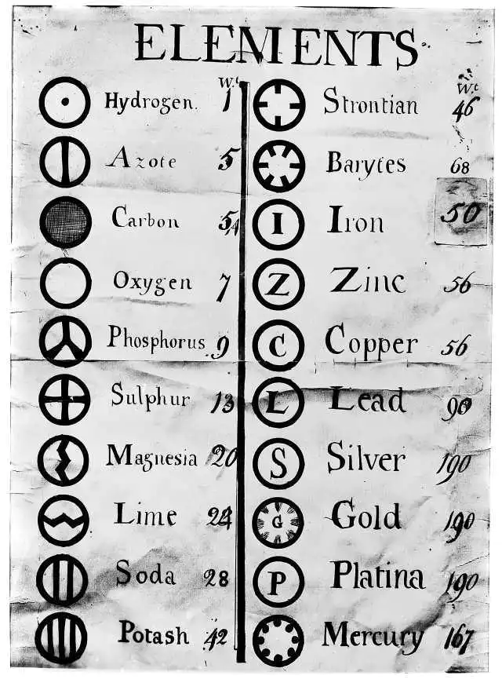
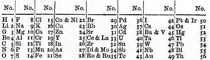
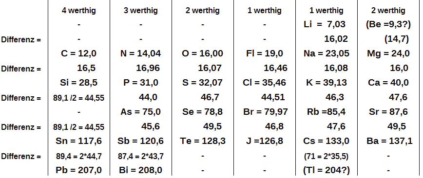
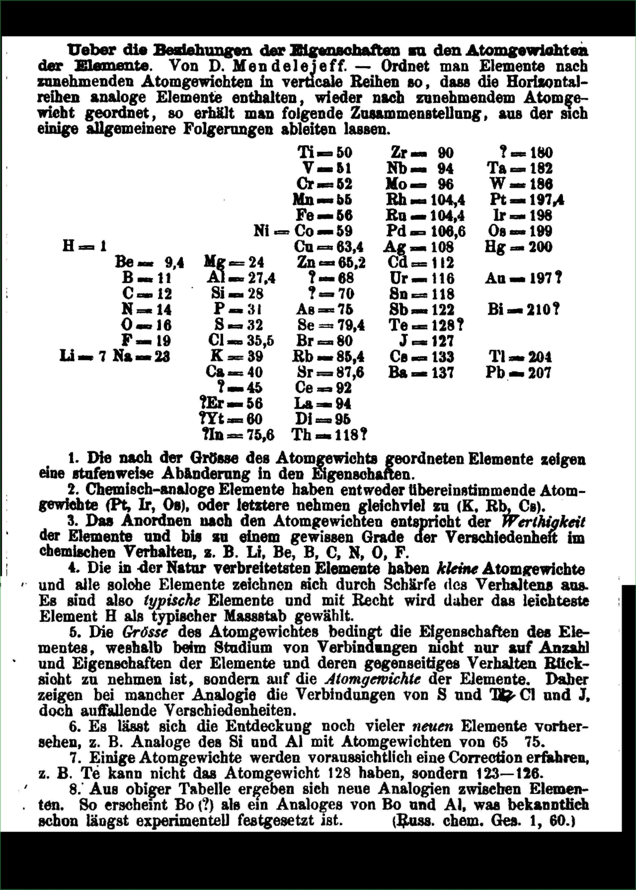

事实上，门捷列夫（Dmitri Mendeleev）并不是第一个尝试给各种化学元素排序的人，在他之前几十年，约翰·道尔顿（John Dalton）曾试图为这些元素创造一张表格和一些很有趣的符号，但它们没能流传开来。
而且就在门捷列夫创建周期表的几年前（1864年），约翰·纽兰兹（John Newlands）也创建了一张根据元素物理性质对其进行分类的表格，他同时也创造了化学中的周期性（Periodic）一词。
同年，与门捷列夫一同在罗伯特·本生（Robert Bunsen）手下工作的德国化学家罗塔尔·迈耶尔（Julius Lothar Meyer）比纽兰兹更进一步发现了隐藏在各种元素里奥秘，并指出如果按照原子量给元素排序分类的话，每组元素之间的物理、化学性质会非常相似。
但是，门捷列夫的天才之处体现在他为元素周期表留出的空白之中。他意识到某些元素是缺失的，还有待被发现。道尔顿、纽兰兹和其他人只是将已知的元素进行排列，只有门捷列夫为未知元素留出了空间。更令人惊讶的是，他准确地预测了缺失元素的性质。
例如，在铝（Al）的右侧有留给某种未知金属的位置（"？=68"），门捷列夫预言它的相对原子质量为 68，密度为 6 g/mL，熔点很低。六年后，保罗·埃米尔·勒科克·德布瓦博德兰（Paul Émile Lecoq de Boisbaudran）分离出了镓（Ga），完美填补了这一空缺——它的相对原子质量为 69.7，密度为 5.9 g/mL，熔点很低，甚至能在人的手里熔化成液体。门捷列夫也对钪（Sc）、锗（Ge）和锝（Tc）作出了同样的猜测，但直到 1937 年人们才发现了锝，那时他已经去世 30 年了。
要说门捷列夫的元素周期表和现代元素周期表有什么区别，最明显的就是现代元素周期表不仅补充门捷列夫空缺的元素，也补充了许多当时不为人知的元素（主要是稀有气体元素和大部分放射性与人工合成元素），另外二者的排列方式有一定差异，现代元素周期表排布要更为合理。